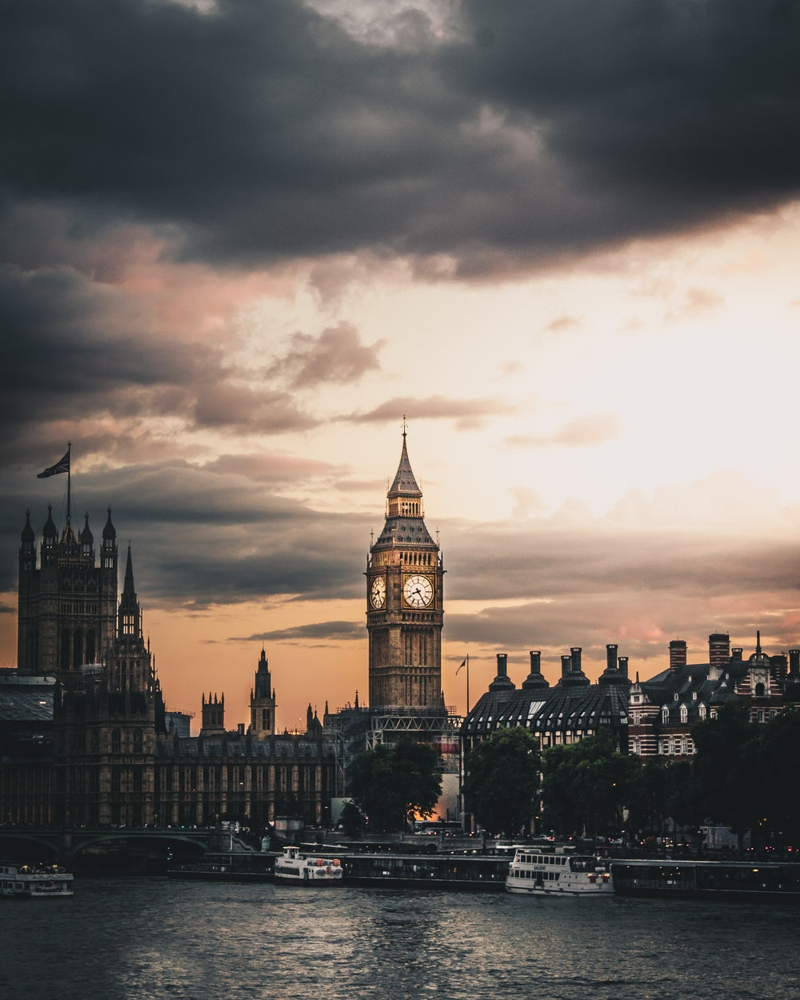

런던(영어: London)은 잉글랜드와 영국의 수도이자 최대 도시이다. 인구는 2014년 기준 8,538,689명으로 영국은 물론 유럽 전체 대도시권 중 가장 큰 권역이다.[주해 1] 런던은 템스 강을 기반으로 2,000년 동안 발전해 왔으며 역사는 로마인들이 론디니움이라는 요새를 지은 때부터 시작되었다.[3] 시티 오브 런던은 고대 시대부터 런던의 핵심 지역인데, 크기는 1.12-마일(2.9 km2)로 중세 시대부터 변하지 않고 있으며 2011년을 기준으로 7,375명이 거주하고 있는 잉글랜드에서 가장 작은 도시이다. 적어도 19세기부터 "런던"이라는 용어는 주변 도시를 중심으로 개발된 대도시를 뜻했다.[4] 이러한 광역 도시권의 대부분은 런던 지역[5]과 그레이터 런던으로,[6][주해 2] 런던 시장과 런던 의회에서 통치한다.[7] 
런던은 세계적인 글로벌 도시인데,[8][9] 예술, 경제, 패션, 엔터테인먼트, 금융, 의료, 매체, 전문산업, 연구와 개발산업, 관광, 교통 등 거의 모든 부문에 있어 뉴욕, 도쿄와 함께 세계 최고 역할을 하고있다.[10] 특히 세계의 가장 중요한 금융 지구 중 한 곳으로,[11][12][13] 기관에 따라 세계 도시 GDP 순위 중 5위 또는 6위로 선정된다.[14][15] 또 뉴욕, 도쿄와 함께 세계의 문화 수도이다.[16][17][18][19] 국제 항공편 승객에 의하면 세계에서 가장 관광객이 많이 찾는 도시이고[20] 세계에서 가장 높은 여객 수송량을 담당하는 도시이다.[21] 런던은 유럽에서 가장 많은 대학을 보유하고있는 도시로, 43개의 대학이있다.[22] 런던은 1908년, 1948년, 2012년 하계 올림픽을 개최하면서 현대 도시 중 최초로 세 번의 하계 올림픽을 개최한 도시이다.[23]